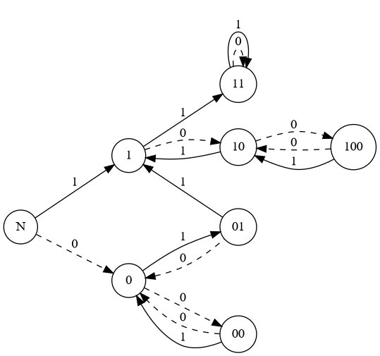

IOI2020 国家集训队作业小结 1
文章目录
主要是 AGC 的题。
AGC022 E Median Replace
给一个长度为奇数的含有 01? 的字符串，每次可以把一个长度为 3 的子串变成它们的中位数。你可以在? 处填 0 或 1。问有多少种填法，使得填完后我们可以通过若干次操作把整个字符串变成 1。
。
摘要：将合并的过程理解为是在遍历字符串的时候进行。构建自动机并 DP 计算方案数。
考虑如何判断一个给定的 01 串是否美丽。我们尝试建立一个自动机：

我们可以把自动机的状态转移理解为在当前字符串的末位添加一个字符转移到的状态。举个例子，在 01 后接一个 1，我们可以合并 011 为 1 来得到 1 这个状态。当然，有时候我们并不需要合并操作。
显然，1 和 11 是好的状态。
考虑在自动机上 DP，表示考虑字符串前 i 个字符，走到状态的方案数。答案就是。
AGC022 F Checkers
题意：有个棋子在数轴上，第个棋子的坐标是。每次你可以选择两个棋子，设坐标分别为。你可以以为中心，将对称过去，然后删掉。即的坐标变成。一直操作到只剩下一个棋子。问这个棋子有多少种可能的坐标。
。
摘要：对称转化为连边，坐标方案数转化为多项式的系数方案数，转化为树的模型。树的形态确定了系数的绝对值，再按层 DP 来同时对树的形态与系数符号的方案计数。
考虑一个初步转化。如果对做对称，相当于删掉，产生一个的点。我们可以理解为 A 向 B 连一条边（B 是 A 的儿子）。这样一个操作序列可以转化为一棵树。当然，同一棵树可能对应多个不同的操作序列。
容易发现，最后一个棋子的坐标可以写成元的多项式。式子里每个元素的系数一定是的形式，其中表示 i 在树上的深度。因此我们只需要考虑每个元素的系数的符号对答案的贡献。
考虑儿子对父亲的贡献：对于树上的一个点，如果有奇数个儿子，那么等合并了它的所有儿子后，的系数的符号会改变。也就是说如果一个点有奇数个儿子，那么它的系数符号就会受到 1 的贡献。
考虑兄弟的贡献：如果一个点有偶数个儿子，那么这些儿子中有一半会受到 1 的贡献（即乘一个 -1），另一半则不会受到贡献；如果一个点有奇数个儿子，假设为 k，就有个点会受到 1 的贡献，其他点不会。
因此一个点的系数符号，可以转化为它的儿子结点对它的贡献以及它的兄弟结点对它的贡献的方案数。现在问题转化为了在树的模型上进行方案数统计。
考虑 DP。设表示一共有个结点的树，且最后一层的结点上预支个结点有奇数个儿子的方案数：
- 这里的方案数不是树的形态数，而是不同系数构成的序列的方案数；
- 最后一层不是指所有叶结点，是深度最深的那些叶结点；
- 预支的意思是不一定存在，但是我们假设它有奇数个儿子。
考虑边界，显然有。第一个点有种选择。而这个点我们可以预支一个奇数点（奇数点指有奇数个儿子的结点），也可以预支一个偶数点。两者方案数都为 1。
答案显然为。
考虑转移。首先我们枚举最后一层的下一层有个结点，并且这个点的父亲都在最后一层上。由于最后一层上有个奇数点，因此，并且同奇偶。在这一层上，有个点会受到贡献（乘一个 -1）。即兄弟结点之间的贡献。
但实际上这个结点的贡献是啥我们并不知道，因为我们没有考虑这个点的儿子结点的贡献。因此枚举这个点中有个点实际上受到了 1 的贡献（即系数为 -1）。由于我们已知有个点受到 1 的贡献，因此我们需要更改个点的贡献状态（如果就要让一些点从 1 变成 -1，否则就要让一些点从 -1 变成 1）。因此我们预支这些点有奇数个儿子，这样就可以达到这个数量了。
转移的时候要计算一下组合数，相当于从个点中选个，再从个中选个。
时间复杂度。
AGC023 F 01 on Tree
题意：一个个点的有根树，每个点上写了 0 或 1。现在求一个拓扑序使得点权序列的逆序对数最少。
。
摘要：树上贪心套路，每次将最优策略点与父节点合并（绑定）。
假设一个点上有多个 01。设表示这个结点里的个数。我们考虑贪心地把结点合并到它的父节点上，合并的含义是一旦选择了这个父节点，我们就立刻选这个结点。那么对于结点的两个儿子结点，我们考虑先合并再合并与先合并再合并的代价差：
因此我们每次选择当前结点中最大的结点，把这个点和它的父节点合并即可。
时间复杂度。
AGC023 D Go Home
题意：有个公寓在数轴上，坐标为。每个公寓有个人。有一辆初始时位于坐标的公交车，一开始所有人都在车上。车上的人都很聪明（带有博弈性质），每个人会投票选择一个方向（左或右），使得自己能尽可能早地到公寓。哪个方向的票数多，车就往哪个方向走一个单位。如果票数相同就走左边。问公交车把所有人都送达公寓的时间。
。坐标都是整数。
摘要：从规模小的问题推广到原问题。
假设，那么 1 号公寓一定比 n 号公寓先到。因为考虑到你往右走，最多走到 n-1 的位置后，就会开始往 1 走。
于是聪明的 n 号公寓的人就会想方设法帮 1 号公寓的人投票。因为只有到了 1 号公寓后才会到 n 号公寓，即，那么我们就可以删掉 n 号公寓。
如果同理。这样可以递归求出我们找公寓的顺序。注意边界，当当前所有的公寓都在的一边的时候，我们就直接顺着走过去即可。
时间复杂度。
AGC024 D Isomorphism Freak
题意：给一棵无根树。你可以任意给这棵树加点加边，只要保证它是棵树。另外，你需要给这棵树的结点染色，使得对于同色的结点，以为根的树与以为根的树同构（存在一个置换使得每条边一一对应）。你需要求出最少颜色数，以及在满足前者的条件下最少的叶子数。
。
摘要：按层分类，补满来保证同构。枚举根或者一对根（即以边为根），统计最优解。
我们考虑找一个类似中心的东西。那么我们以这个中心为根，把这棵树补满。这里补满的含义是，每一层结点的度数都相同。补满后我们让每一层的颜色都相同，显然满足题目的条件。这样颜色数就是深度。叶子数就是每一层的单点度数积。（这里的度数指除了父边的度）
当然，中心也不一定为点，可能是一条边，那么这时就相当于是我们让这两棵树同构，那么同样的方法把两棵树补满即可。叶子数就是每一层的单点度数积再乘 2。
因此我们没必要求出中心。直接枚举每个点和每个边，统计最小值即可。
时间复杂度。
AGC024 E Sequence Growing Hard
题意：求满足以下条件的元组的个数：
- 是一个长度为的整数序列，且元素的值在内；
- 是的子序列；
- 的字典序严格小于的字典序。
。
摘要：里插入一个数得到，合理枚举插入的位置来防止算重，并转化为带权树的计数问题，通过 DP 计算。
考虑我们在一个序列里插入一个数，如何让它的字典序变大？假设我们在数字 x 前插入 y，那么有两种情况：
- 。
- 。然后在之后第一个不等于的位置，这个数比小。
仔细想想，我们不用考虑第二种情况。因为你可以直接在这个比小的数前插入，转化为第一种情况。这样我们也防止了算重的问题。因此我们只考虑第一种情况。
我们可以把这个元组转化为个二元组。第个二元组表示第次插入操作，表示我们在第次操作插入的数前面插入一个。特殊地，当时表示在序列末尾插入一个。
这个操作可以转化为树的构建，即我们把向连边。这样就构成了一棵有根树，为根结点。因此我们的元组最终转化为了一个个结点的有根树。那么我们考虑树的计数。总结一下，这棵树满足以下条件：
- 结点总数为。
- 每个点有一个二元组。
- 父节点的比子节点的分别严格小。
- 结点的范围为，的范围为且互不相同。
- 根结点。（注意在此条件下根结点的必为 0）
考虑 DP。设表示有个结点，根结点的的树的方案数。严格来说是满足以下条件的树方案数：
- 结点总数为。
- 每个点有一个二元组。
- 父节点的分别比子节点的严格小。
- 结点的范围为，的范围为且互不相同。
- 根结点。
转移的时候枚举的点（是根结点的儿子）的子树的大小和值。然后从剩下个中选择若干个作为这个子树的即可：
修订记录
- 2019年11月27日 创建文章